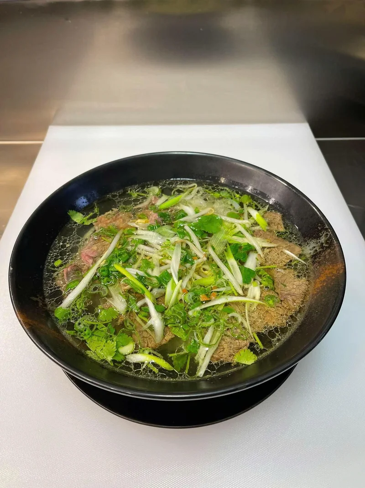
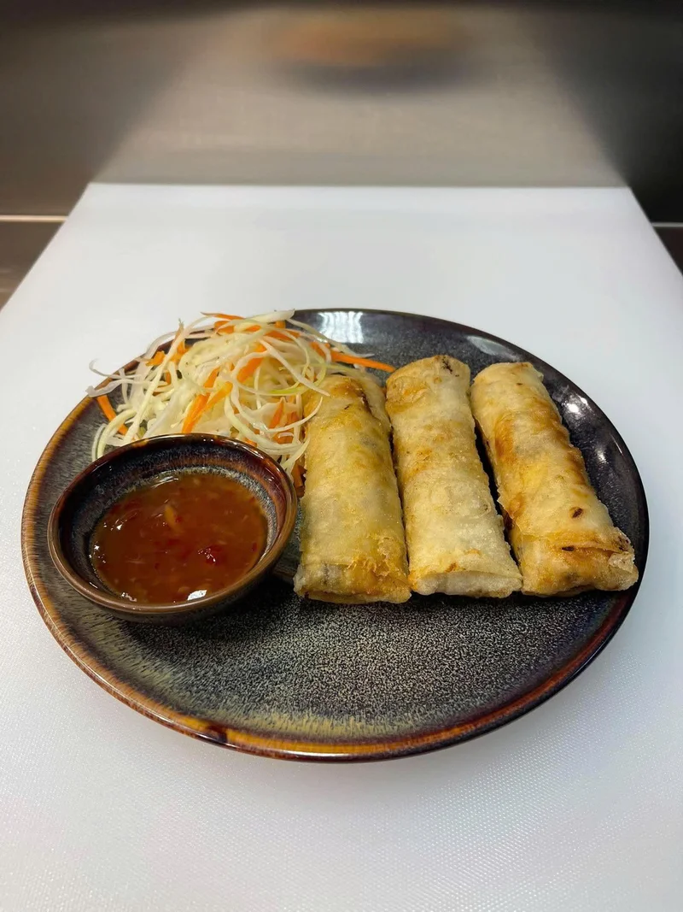
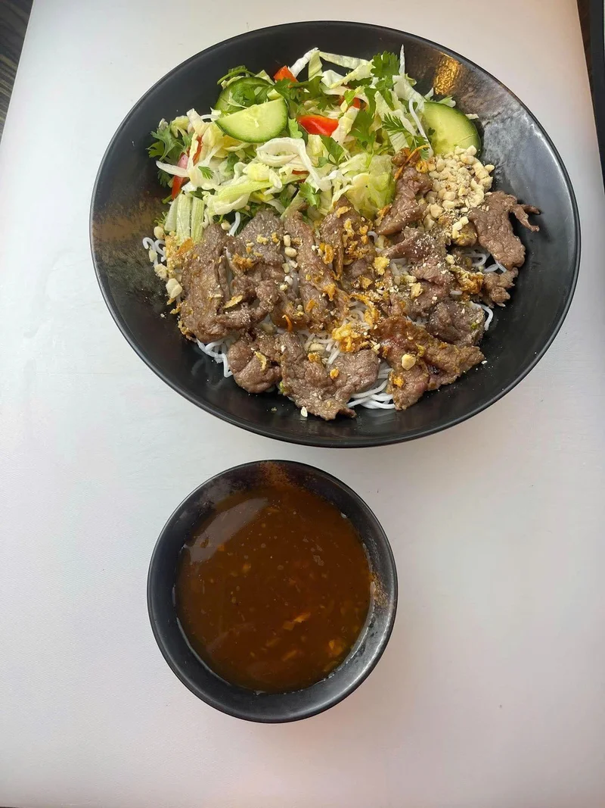

Kuchnia azjatycka w Cieszynie
Gotujemy na miejscu ze świeżych składników. W menu znajdziesz phở, Bún bò Nam Bộ, chrupiącą kaczkę, Pad Thai i dania z woka.
Świeże składnikiTradycyjne recepturyRodzinna atmosfera
Odwiedź nas przy Srebrnej 14 →

